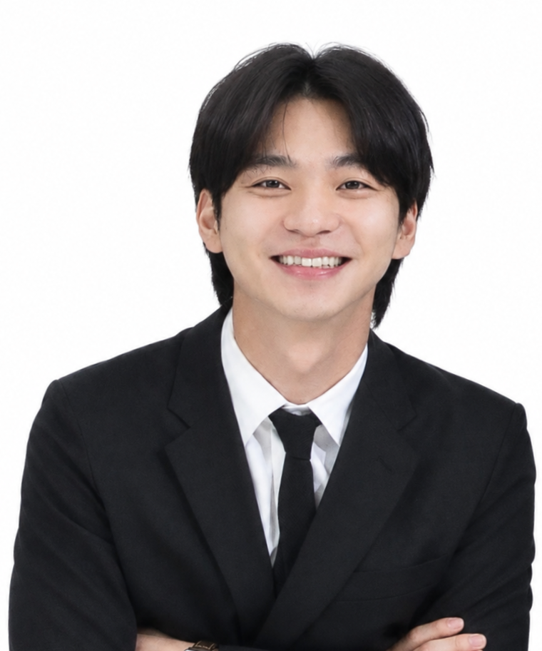
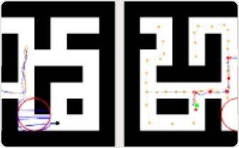
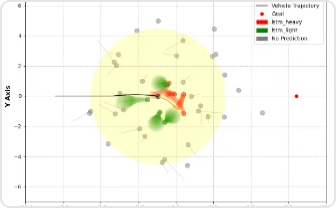

Hi, I'm KwangBin. I completed my M.S. in Electrical Engineering at KAIST, where I also received my B.S.
My goal is to build general-purpose robots that can operate reliably in the real world. My recent work has focused on reliability in robot decision-making, from uncertainty quantification to safe generative planning. I am particularly interested in two questions:

